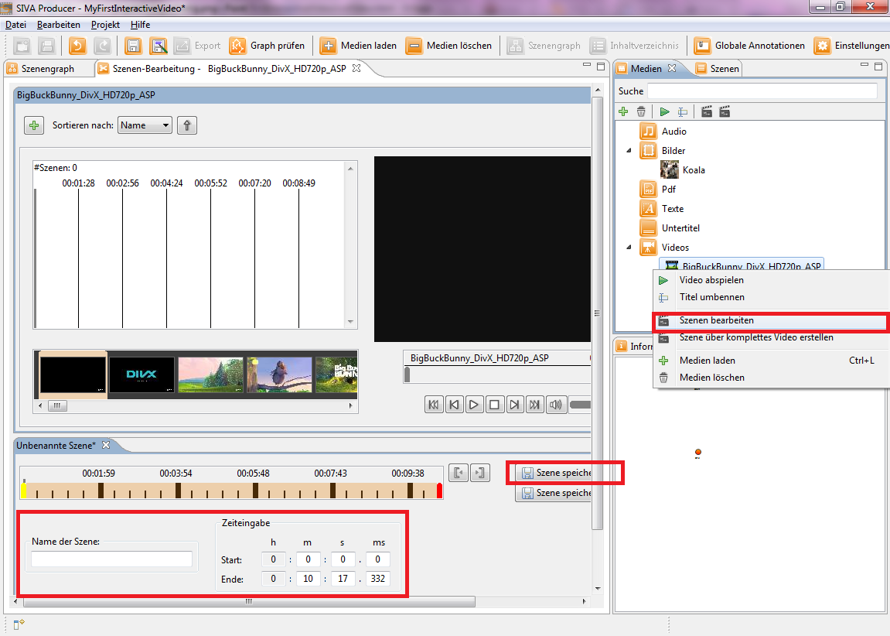

You have decided that you do not want to add the whole video as a scene to the interactive video, but only a part of it. For that
click with the right mouse button on your video in the media-repository, so that the context menu is opened. After that click on
the "edit scene"-button to open the scene editor.

In the scene editor you can move the yellow beginning bar and the red ending bar within the timeline to cut your video or you limit the scene by typing in the start and end time in the "time input"-section.
Furthermore you have the option to choose the title of the scene in the section below or to assign key words.
Finally you click on one of the "Save"-buttons to finish the cutting and to save the scene in the scene repository.